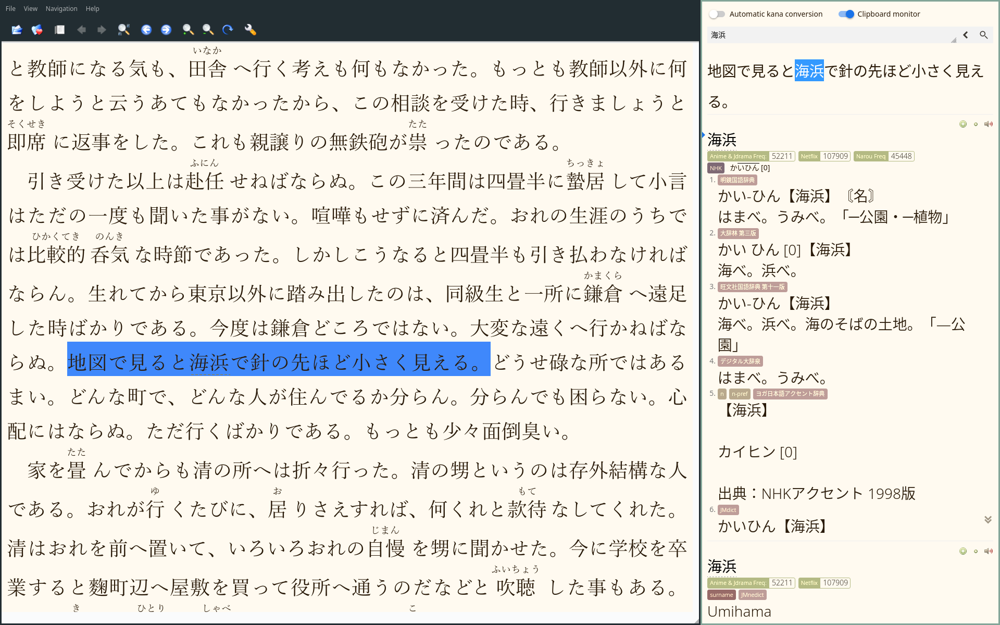

Reading books
Reading a book is a simple process. You don't need much technology to read a book. In contrast, when watching a movie, you need software that can create Anki cards from the subtitles. Or, when reading manga, you need an OCR tool to extract text from the images. But to read a book, all you may need is a dictionary on hand to look up unfamiliar words. And a program that can open and display books, of course. If you have a paper book, you don't even need a computer. Nevertheless, there are some tips I'd like to discuss here.
In this article, we'll discuss a few tips and tricks to help make reading books in Japanese easier and more enjoyable.
Obtaining books
There are many ways to obtain books.
For your convenience
I have compiled a list of various places in Resources.
In my experience Zlibrary together with torrent sites are able to satisfy most needs.
Things to avoid are Amazon, books with DRM.
Book reader software
Most book readers
listed on Arch Wiki
suck ass.
But some are okay.
I have tried a lot,
and for the most decent ones I have written short reviews.
crqt-ng is what I use these days.
It does a lot of things right.
- It runs natively, without nasty technologies like Electron, JavaScript, etc.
- It can display furigana correctly.
- You can set up Japanese fonts instead of Chinese fonts, which is important because Chinese kanji and Japanese kanji are printed differently.
- It doesn't lag.
- You have a continuous view mode.
- You can create bookmarks. Bookmarks can be easily accessed, you can have any number of them, and they are easy to spot visually.
- It can automatically send text to the system clipboard when you select it.
This is extremely useful
if you want to use
crqt-ngalongside Rikaitan Search, Qolibri or GoldenDict.

crqt-ng and Rikaitan Search, side by side in i3wm.
Reading alongside an audiobook
This is a tip for people who aren't used to reading in a foreign language yet. Hearing the audio as you're reading helps comprehend what's going on and teaches you how the words you read should be pronounced.
If a book is old,
for example if it's something by 夏目漱石,
audiobooks can be grabbed directly from YouTube.
But to find audiobooks for most modern books
you have to search on Torrent sites or elsewhere.
Mpvacious can create Anki cards from audio files.
Creating cards from audiobooks is similar to creating cards for movies and TV shows,
except you have to set timings manually,
and it won't create a picture because there is no video stream.
If you have mpvacious installed, open an audio-book in mpv just by calling mpv /path/to/file.
Each time you want to create a new card,
press a to bring up the advanced menu,
press s to set the start time,
seek forward with arrow keys or the h and l keys to the end of the phrase,
and press e to set the end time.
Press n to create a card,
or update an existing card by pressing m.
Remove silence from an audiobook
Before listening to an audiobook, it may be desirable to remove any sections containing no spoken dialogue (silence). To accomplish this, a command like the following should suffice. You need FFmpeg installed to run it.
ffmpeg -i /path/to/audiobook -af silenceremove=stop_periods=-1:stop_duration=0.3:stop_threshold=-50dB -c:a libopus /path/to/output.opus
- Add this command as a function to your
.bashrcto avoid copying it every time. - See this reference.
Hand-held book readers
There are dedicated mobile devices made specifically for reading books. My advice regarding them is the same as with Andriod: find a device that you can use without running any non-free software. Definitely don't buy Amazon Swindle.
Often people want to read on an e-ink device. I have never owned one, but it would probably be nice to have! The main advantage is apparently that your eyes don't get tired as much compared to reading on a computer screen. One example of such a device is PineNote.
KOreader is a book reader application designed for e-ink devices, and it supports installing dictionaries, which is great for language learners. Try it if you have an e-ink device.
Tags: guide